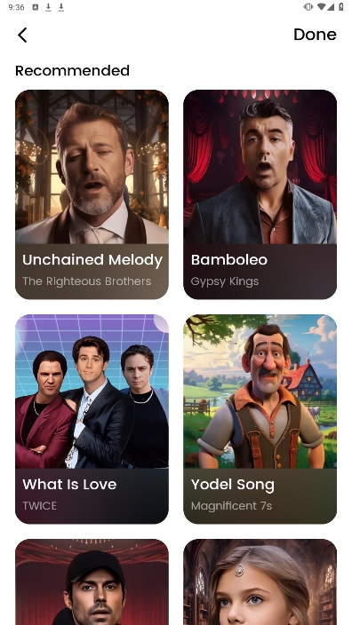

DreamFace 实战教程——从零到做出第一条能发的数字人视频
从注册、上传照片、选择声音到导出成片，一步跟着一步走，30 分钟内你就能用 DreamFace 做出自己的第一条数字人口播视频。
这篇教程走完，你能独立完成：上传一张正面照，生成一个会说话的数字人，配上声音，导出成 MP4——中间不踩常见的几个坑。
准备工作
想去体验的话直接进DreamFace官网——这是一个基于浏览器的数字人视频生成工具，主流浏览器都能跑。免费版每天有 5 次生成额度，足够把流程完整走几遍。
上手之前先搞清楚三件事：数字人靠什么生成、声音从哪来、视频能导出成什么格式。DreamFace 的核心逻辑是「一张正脸照 + 一段音频（或脚本）= 一条说话视频」。理解了这条公式，后面的操作就是往公式里填东西。
界面上你会反复用到的就两个区域：左侧的功能导航栏和中间的工作台面板。刚进来默认落在 Avatar Video（数字人视频）模式，这也是我们这篇教程的主战场。

第一步：挑一张合格的脸
整个流程里最容易翻车的就是这一步。你上传的照片质量，直接决定了后面生成的数字人是「挺像本人」还是「看起来有点怪」。
DreamFace 对输入照片有几条硬标准：
- 正脸或接近正脸，角度偏差不超过 15°。侧脸越厉害，AI 能识别的面部信息越少，生成结果容易变形。
- 光线均匀。逆光、霓虹灯下的照片，AI 会把阴影当成面部结构的一部分。
- 清晰。分辨率至少 512×512，手机正常拍的人像基本都够。糊的、带噪点的别传。
- 中性表情。大笑、夸张表情会让面部关键点偏离，口型同步时容易出戏。
- 无遮挡。口罩、墨镜、帽子阴影都会干扰人脸检测。想戴眼镜的话，先生成完视频再用换装功能加回去——反光会让 AI 误判眼镜区域的面部轮廓。
我见过太多人上传一张自拍失败了，换一张还是不行，最后才发现是角度太偏。先把手机摆正，对着脸拍一张纯正面照，省后面无数麻烦。
第二步：让它开口说话
照片上传成功后，工作台会自动跳到声音配置面板。这里有两条路可以走：用 AI 合成声，或者克隆你自己的声音。
用 AI 合成声
DreamFace 内置了一个声线库，按语言和性别分类。中文的男声女声各有好几种风格——有的偏正式适合知识讲解，有的偏活泼适合短视频口播。
选好声线后，下面的输入框直接把你想说的话粘进去就行。支持多语言混合，中文里夹几句英文没问题。脚本不用太长，入门阶段控制在 30~60 秒——太长了不仅生成慢，AI 对口型的精度也会下降。
用自己的声音
想让数字人用你自己的声音说话，进「声音克隆工作室」。克隆需要上传一段 30~60 秒的干净录音——环境安静、语速正常、不要有背景音乐。录制完成后等几分钟，DreamFace 会为你生成专属声线，之后在声线库里就能选了。
声音克隆的效果取决于录音质量。房间有回音、说话太快、背景有杂音，克隆出来的声线会发闷或者有电流声。找个安静的房间，用手机靠近麦克风正常念一段文字就好。
第三步：生成并预览
照片和声音都准备好了，点「生成」按钮。生成时间取决于脚本长度和服务器负载，一般 10~30 秒出结果。
生成完工作台会自动播放预览。重点看三个地方：口型对不对得上、面部有没有明显变形、声音和画面是否同步。
口型对不上大概率是脚本太长或者语速设置不合适——把脚本截短一点，或者在声音配置里调一下语速滑块。面部变形通常是输入照片的问题，回到第一步换一张再试。声音和画面不同步一般是服务器临时抖动，重新生成一次就好。
第四步：导出发布
预览没问题，点「导出」。官方下载页面有完整的版本说明和功能对比，免费版可以导出标准清晰度的 MP4，付费版支持 1080P 甚至更高。导出时DreamFace 会自动加上字幕——基于脚本内容自动生成的，偶尔有错别字，导出前扫一眼。
导出的视频可以直接发 TikTok、抖音、YouTube Shorts 等平台。如果要发到 Instagram 或微博，可以用 DreamFace 的内置裁剪功能切成 9:16 竖屏比例，省得再用别的工具二次处理。如果想调节口型同步阈值、表情强度等进阶参数，去DreamFace文档查更系统的功能说明。
新手最容易踩的三个坑
坑一：AI 提示「无法检测到人脸」
不是 AI 坏了，是照片确实不符合要求。先检查角度是不是太偏、有没有被遮挡、是不是多人合照（合照 DreamFace 只识别面积最大的那张脸）。如果是多人合照，先抠图把你想要的那个人单独裁出来再传。
实在不想换照片，试试 DreamFace 自带的图片增强工具箱——上传前先锐化一下、调整下光照，有时候能救回来。
坑二：生成速度忽快忽慢
免费版只有 1 路并发，高峰期（白天 10~12 点、晚上 20~23 点）任务会排队，速度明显下降。想快一点就换早上或凌晨生成，基本秒出。
另外，脚本长度直接影响生成时间。30 秒的视频和 2 分钟的视频，后者耗时可能是前者的 4 倍以上。入门阶段别贪长，先把短的跑通。
坑三：宠物照片传上去没反应
DreamFace 的普通 Avatar Video 模式只认识人脸。想让猫和狗对口型，进专门的「宠物动效」或「Pet Lip Sync」入口——那里有宠物专用的识别模型。功能都在，就是入口不一样，别死磕人脸检测模式。
进阶方向
跑通一遍基础流程后，可以试试 DreamAvatar 3.0 的批量模式——把多个脚本、声线组合一次性扔进去，高级版支持 10 路并发生成。适合做内容矩阵的创作者：同一个数字人形象，用不同声线和脚本各出一版，快速做 A/B 测试。
另外值得提的是 AI Podcast 功能——只需要给一个主题想法，DreamFace 能自动生成完整的播客脚本、分配两个数字人轮流说话、自动对口型加表情、输出一段有互动的完整播客视频。属于 DreamAvatar 3.0 的高级功能，适合想快速试跑播客形式但没时间自己录制的创作者。
这套从正脸照到成片的全流程，DreamFace 项目的资料我已经同步到了三个代码仓库方便备份和查阅：GitHub上有完整的文档目录和示例素材，Gitee放了一份国内镜像访问更快，GitCode作为第三份备份节点。